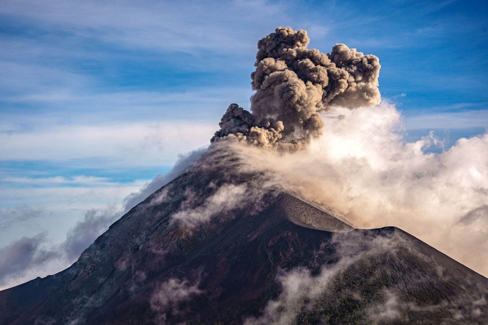

B.3 · The practice
The scientist, and how the work is done
Sara Lindqvist
I took my doctorate at Uppsala in 2009, on the gas chemistry of persistently degassing volcanoes — the ones that never quite erupt and never quite sleep, and which therefore teach you the most about reading instruments honestly. Nine years followed at a national geological survey: duty-scientist rotas, two eruption responses, and a long education in how a careful sentence in a bulletin becomes a decision in a mayor's office.
Since 2018 I have worked independently from Catania, in sight of Etna, which provides a daily reminder that a volcano is not a problem to be solved but a neighbour to be understood. The practice is deliberately small: one scientist, a bench of trusted associates for fieldwork, and a rule that I only sign work I have personally checked.
The through-line of the work is translation. Instruments produce numbers; civil protection needs decisions; insurers need evidence; publics need sentences they can act on. My job is to carry a finding across those borders without it losing its uncertainty on the way.

Instruments & methods, in plain words
- SeismometersMicrophones for the ground. They count and locate the small earthquakes that magma makes as it moves, and hear the continuous tremor of gas and fluid in the conduit. Location and depth over time are the signal; a swarm that shallows is a swarm to respect.
- Gas — DOAS & MultiGASScanning spectrometers (DOAS) measure sulphur dioxide in the plume by ultraviolet light, in tonnes per day; MultiGAS instruments flown or walked through the plume read the CO₂-to-SO₂ ratio, which often changes before the total flux does.
- InSAR & GPSSatellite radar compares the ground's position between passes and maps uplift or subsidence across a whole edifice, to centimetres. GPS stations give the same measurement continuously, at points. Together they show a volcano breathing in — or failing to breathe out.
- Thermal & photogrammetryThermal cameras find new heat at vents and along fissures; drone photogrammetry, where aviation rules and the volcano permit, builds measurable models of domes and deposits.
- Field samplingAsh, gas and rock, collected to chain-of-custody standard when the work may end as evidence. A sample without a documented history is a souvenir.
- The archiveThe least glamorous instrument and often the decisive one: a volcano's own eruptive history, read in deposits and documents. Most forecasts are, at bottom, the archive plus the instruments.
Field rules
The mountain decides
- Exclusion zones are absolute. They bind this practice exactly as they bind the public. No deadline, fee or photograph outranks one.
- Gas kit is worn, not carried. Respirator fitted and personal gas monitor live before entering any degassing area; hydrogen sulphide dulls the sense of smell at exactly the concentrations that matter, so the nose is never the instrument.
- Turnaround is decided in advance. Wind shift, tremor change or a monitor alarm ends the traverse — the decision is made in the office, not negotiated on the slope.
- Nobody works a volcano alone. Minimum party of two, a check-in schedule held by someone off the mountain, and a written route left behind.
- Local observatory first. This practice works in another institution's volcano only with its knowledge and, wherever offered, its company.
How uncertainty is communicated
Every report from this practice separates three things that are too often stirred together: what was measured, what it is interpreted to mean, and what is not known. Each gets its own section, in that order, and the third is never the shortest by accident.
Probabilities are given as ranges with their basis stated, or not given at all. The sentence "an eruption is likely" is banned from my documents unless the same paragraph says likely compared with what, over what period, and on which evidence. Clients occasionally ask for a firmer sentence than the data supports. The answer is a firmer description of the data.
Engagement terms
Work is commissioned against a written scope and a fixed fee or a capped day rate; 30% on commission, the balance on delivery. Eruption-response terms — rates, availability, decision rights — are agreed before unrest begins, in writing, because mid-crisis is no time to negotiate them. Reports are the client's to publish; the underlying data audit trail is retained by the practice for ten years. Where my conclusion would embarrass a client's project, the conclusion is delivered anyway, once, in full — that conversation is included in every fee.
Commission the practice
Hazard, monitoring or evidence — the first step is a scoping call and a written fee.